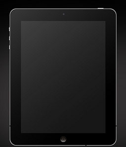

Каталог продукції

iPhone
ряд смартфонів, розроблений компанією Apple і випущений 2007 року. iPhone функціонує як камерофон, портативний медіа-плеєр, інтернет-клієнт (з електронною поштою, веб-браузером та Wi-Fi), зокрема з можливостями відправки SMS та візуальної голосової пошти. Головною особливістю смартфону є сенсорний екран з технологією multi-touch, навколо якого побудований інтерфейс користувача з віртуальною клавіатурою замість фізичної. Є вбудована можливість створення скріншотів одночасним натисканням кнопки виключення телефону і кнопки «Додому», результат при цьому зберігається в альбомі «Фотоплівка». Зараз єдиним офіційним засобом зв'язку iPhone з комп'ютером є програма iTunes, доступна тільки для користувачів операційних систем від Apple і Microsoft.
Apple Watch
Наручний годинник із додатковими функціями (розумний годинник) створений корпорацією Apple. Для його повноцінної роботи потрібен смартфон сімейства iPhone 5 або більш пізньої модифікації. Годинники мають поворотне коліщатко для прокрутки або збільшення. Дисплей має розмір 38х38 або 42×42 мм, і здатний розрізняти натискання і дотик. На нижній стороні годинників можуть бути розташовані світлодіоди і фотодіоди для вимірювання пульсу. Також є в наявності інтерфейс NFC, який дозволить робити безконтактну оплату через систему Apple Pay.

iPad
серія планшетних комп'ютерів від Apple Inc. Заявлені як проміжний варіант між ноутбуками MacBook і портативними медіаплеєрами iPod Touch, здатний виконувати певні операції, пов'язані з переглядом відео, прослуховуванням аудіозаписів, читанням електронних книг, а також використанням можливостей Інтернету краще за обидва вищевказані пристрої. Керування здійснюється пальцями через сенсорний дисплей Multi-touch, що не схоже на попередні планшетні комп'ютери, які використовували перо. Для перегляду інтернету використовується Wi-Fi або 3G. USB кабель синхронізує iPad з комп'ютером через програму iTunes, так само як і iPhone.
| Контактний номер: | +38-073-692-77-53, +38-067-697-64-24 |
| Адреса | м. Львів, вул. Ф. Ліста, 10 (vul. Frnz. Lista, 10) |
| E-mail: | lalala |
| Графік роботи: | Пн - Нд з 10:00 до 19:00 |